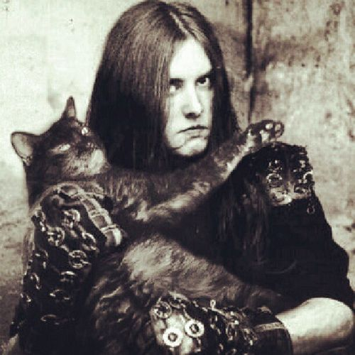

Black Metal

The darkest of all the metals...
Black
Metal is considered a particularly evil and unrelenting
form of metal. The reasons for this are many, including
its divergence from typical modes and song structures
(a trait shared with Death
Metal), implementation of overly distorted guitars
and harsh vocals (a trait shared with
Death Metal), extreme drumming speeds (a trait shared
with Death Metal), and
often poor/obscure production quality (a trait rarely
shared with Death Metal).
An emphasis on "Satanic" themes is also prevalent
in the genre; non-Satanic bands in the same style often
consider themselves Pagan Metal or Viking Metal
or something similar: these may rely more on traditional
modes and song structures, but will retain aggression,
speed, harshness of vocals etc. while possibly adding more
clean vocals/guitar passages to evoke the ancient or
medieval. Traditional Black Metal's invocation of the
ancient and medieval is emphatically eerie when it occurs.
In order to kvvk up some Black Metal, there are a few
basic things we need:
- A guitar
- An amp (or, if you have no money, a free "Amp Simulator")
- Drums (or a drum machine)
- A DAW (or, for the trve kvlt, a TASCAM 4-track tape recorder from 1986)
- XLR and line cables (min 2 of each)
- A microphone (min 1; max 4 - each mic needs XLR)
- Multi-mic needs sound card/mixer capable of as many tracks
(e.g. your 4-track should have 4 XLR inputs)
- TAPES if you are recording to TAPE
The steps involved
in making Black Metal are reasonably simple (the complexity
comes from the depths of emotional turmoil you feel and encode
into non-euclidean riffage):
- Make sure all of your gear is plugged in/ready to record:
- Guitar into amp or direct to DAW/TASCAM;
- Amp micced up if necessary; else direct into DAW; else VST ("Simulator")
- Drums micced up or machine into DAW/TASCAM
- It is important to note that a crappier drum
sound comes with only using 1 mic
- Using more than one mic is only advised if you
want your music to sound halfway decent
- Sound card or mixer is plugged into DAW/TASCAM if necessary
- Open your DAW/turn on your TASCAM (and make sure your TAPE is installed)
- Arm track(s) for recording
- Hit record (this is often play + record on old tape machines)
- Tell your drummer to hit things (or DIY)/hit your drum machine hard and fast
- Swap to guitar (arm new track[s]), syncopate diminished/whole
tone scales with power chords over beat
- Slide chromatically between chords to up the evil
- Occasionally wiggle your fingers up and/or down a fret for
no reason
- Always, always tremolo pick; never stop tremolo picking
- Tremolog pick chords - did you read the last bullet point?
- If you're not tremolo picking, the drummer must have stopped
for a bit or something
- The only acceptable reason NOT to be tremolo picking is Celtic
Frost pitch bends
- You can still tremolo pick these for added effect
- Pitch shift an extra guitar track -12 semitones/-1 octave for an awful bass sound!
- Swap your guitar out for a microphone and start SCREAMING PROFANE THINGS
- These can include but are not limited to:
- Satanic Overtones
- Antitheist Implications
- Worship of Forgotten Deities
- Condemnation of Humanity
- Gay ass love for nature
- Winter, cold, snow, frost, ice, hail, sleet, mist... fog... Did I mention Winter?
- Finally, use (resonant) low filters and white noise generators to make your product sound godawful
Back Home